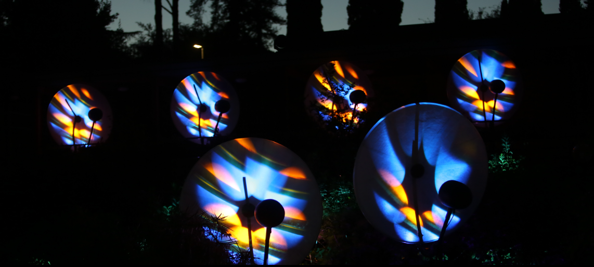
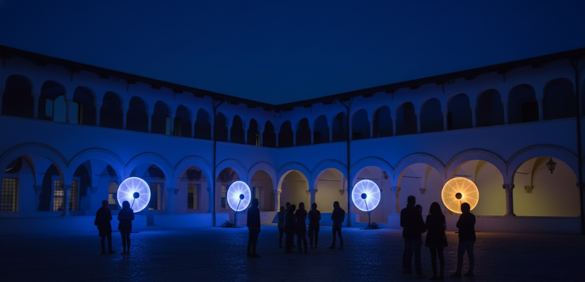
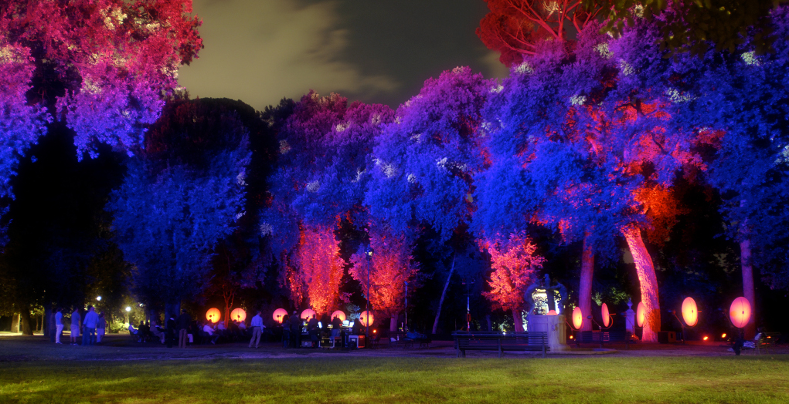
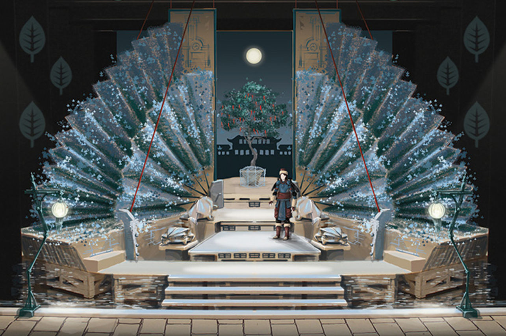
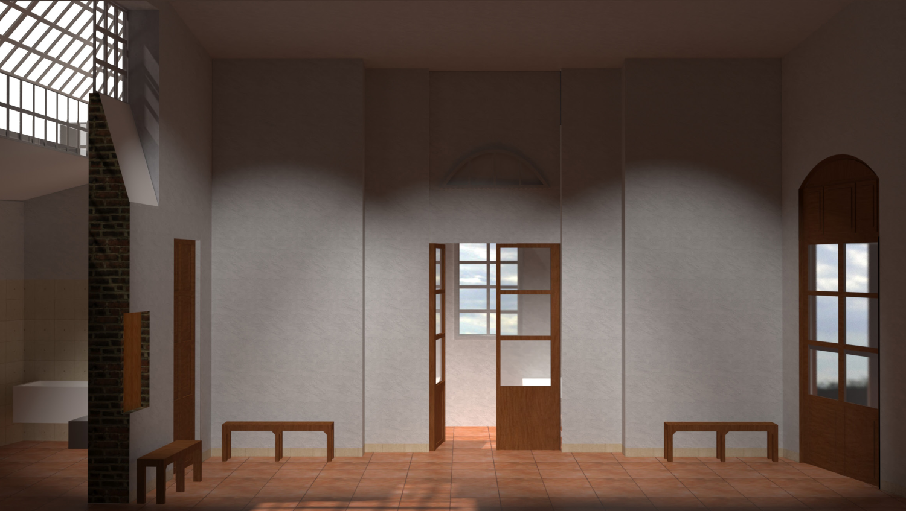

Selected Individual Works of Luciano Ciamarone
This selection highlights Luciano's work at the intersection of sound, technology, and immersive environments. These projects showcase spatialization, algorithmic composition, and interactive sound design, forming the foundation for his collaborative work with Perceptrum and the Sounding Canvas series.
Aesthetica – Interactive Sound Installation
Location / Premiere: Parco degli Acquedotti, Rome – 04/2016
Sound Direction and Programming: Luciano Ciamarone
Holophones system in Aesthetica, illustrating spatialized sound design and interactive installation layout in the Parco degli Acquedotti.
This site-specific interactive sound installation uses Holophones (CRM) to explore the intersection of acoustic physics and quantum theory. Situated in the open space of the Parco degli Acquedotti, the work creates an immersive auditory environment that interacts with the historical and natural context while actively engaging visitors.
Synthesized sounds undergo dynamic morphing, generating a continuously evolving soundscape whose parameters shift over time. The system’s behavior is informed by theoretical principles including Quantum Probability, Wave Interference, Dynamic Systems Theory, and the concept of Singularities, all translated into the installation’s governing algorithms.
Visitor interaction is central: QR codes allow participants to influence the soundscape in real time, triggering specific sequences, accessing multimedia content, or modifying spatial and temporal characteristics of the audio. The installation merges algorithmic composition, spatialized sound, and participatory design to create a responsive and evolving sonic ecosystem, emphasizing the relationship between physical environment, sound, and human agency.
Tools and methods: Max/MSP, Holophones, algorithmic composition, real-time interaction frameworks.
Listen to the audio trackFoyer Instrument Collection – Interactive Music Kiosk
Location / Premiere: Radio Corax, Halle, Germany – 07/2013
Programming: Luciano Ciamarone

The Foyer Instrument Collection kiosk enables visitors to granulate and recombine classical music in a hands-on interactive environment.
Developed as part of the European project Addicted 2 Random, this interactive installation allows visitors to deconstruct and reinvent classical music pieces using contemporary electronic tools. Audio snippets of classical repertoire are processed by the “Granita” algorithm, a Pure Data-based sound granulator, which dismantles the original semantic content and transforms it into raw, malleable sonic material.
Visitors interact with the system through a dedicated GUI featuring sliders and potentiometers to control granulation, modulation, filtering, and reverb, enabling them to recombine the material and create personalized compositions. An “exposure phase” gradually transitions sounds from their unprocessed state to user-defined configurations, ensuring a seamless sonic experience.
The Kiosk integrates external signals from Radiofabrik (Salzburg) and combines them with local user input. The resulting audio is spatialized via a multi-stage DSP system and controlled by an Arduino-based interface, creating a complex, self-regulating feedback loop. This architecture allows for continuous evolution of the soundscape and encourages active participation.
Conceptually, the project bridges historical European music with contemporary digital practices, transforming passive listening into an embodied, collaborative exploration of musical structure. It highlights the potential of algorithmic processes to mediate human creativity and reimagine cultural heritage.
Tools and methods: Pure Data, DSP, sound granulation, AM modulation, Arduino-based control, networked audio integration, GUI-driven user interaction.
More info hereMura – Sound Installation
Location / Premiere: Chiostro S. Domenico, L’Aquila – 03/2013
Sound Direction and Programming: Luciano Ciamarone
Multi-channel sound diffusion setup for Mura, integrating site-specific acoustics with synthetic audio through convolution.
This site-specific sound installation explores the acoustic properties of the Chiostro S. Domenico in L’Aquila, focusing on reflections and cavity resonances to create an immersive sonic environment. The work integrates synthetic audio with the cloister’s natural acoustics using advanced convolution techniques.
Impulse Responses (IRs) were recorded on-site to capture the unique acoustic signature of the space. These IRs were applied through convolution to the synthesized sound material, ensuring that the generated soundscape merged seamlessly with the physical environment. The installation used multi-channel diffusion devices (CRM) to spatialize sound, emphasizing the interaction between architecture, resonance, and listener perception.
The project demonstrates an exploration of site-specific acoustics and the translation of spatial characteristics into an evolving auditory experience, highlighting the interplay of sound, space, and algorithmic processing.
Tools and methods: CRM diffusion system, acoustic convolution, site-specific Impulse Response recording, Max/MSP.
Listen to the audio trackOlofonica – Acousmatic Composition for 16 Holophones
Location / Premiere: Villa Borghese, Rome, Italy – 02/2013
Sound Direction and Programming: Luciano Ciamarone
View of Holophones at Villa Borghese, Rome, Italy
Olofonica is an acousmatic composition designed for the 16-channel Olofono system at the Centro di Ricerche Musicali (CRM) in Rome. The Holophones, parabolic loudspeakers capable of producing hyper-directional sound, allow precise spatialization, and in this work, each device is individually filtered and controlled to create evolving trajectories through space.
The composition explores dynamic, algorithmically-driven soundscapes, where the musical structure adapts over time. Using MaxMsp and MIDI controllers, the work integrates stochastic models and evolving Markov Chains to shape sound transformation, musical material, and the overall structural trajectory. This approach reflects the concept of “Adaptive Works,” where the sonic outcome is not fixed but emerges from procedural rules and real-time processing.
As Sound Engineer and programmer, I coordinated the full signal flow, designing spatial scenes and implementing the technical setup for live diffusion. Olofonica emphasizes immersive auditory experience, blending compositional intent with algorithmic control and multi-channel spatial dynamics to engage listeners in a continuous, evolving sound environment.
Listen to the audio trackAdditional Research & Technical Activities
Foundational Framework for a Probabilistic Spacetime Ontology (2023)
Developed a probabilistic spacetime ontology framework , which informs compositional forms and interactive sound design, bridging physics concepts with artistic practice.
Polyphonic Pitch Detection Algorithms (2021)
Designed polyphonic pitch detection algorithms for guitar and piano, foundational to later projects like Sounding Canvas.
Automatic Dastgah Recognition Using Markov Models (2019)
Created Automatic Dastgah Recognition using Markov Models , demonstrating expertise in machine learning, signal processing, and adaptive musical systems.
Selected Individual Works of Dora Motèque
This selection presents Dora's explorations in interactive and sensory artworks, stage design, and visual storytelling. These projects emphasize human perception, participation, and narrative, shaping the conceptual and experiential approach that informs our Perceptrum collaborations.
Paradoxical – Video Art on Public and Private Identity
Location / Premiere: Teatro Argentina, Sala Squarzina, Rome – 2019
Concept, Cinematography, Scenography, Costumes: Dora Motèque
Video Editing: Arash Moshiri
Music: Luciano Ciamarone
Visual still from 'Paradoxical', illustrating the interplay of public and private identity in the film’s cinematography and scenography.
Paradoxical is a short film exploring gender, identity, and the intersection of personal and cultural values in contemporary Islamic societies. The work investigates the contradictions between public and private identities, and between societal expectations and individual expression, using a poetic, dreamlike visual language. The film’s environments, desert-like landscapes, stark contrasts of black and white, nude and dressed, emphasize alienation, distance, and strangeness while maintaining a lyrical aesthetic.
Through immersive cinematography, careful scenography, and costume design, Dora creates a contemplative space where visual storytelling conveys nuance and emotion. The accompanying music, composed from guitar samples, serves as an intuitive, neutral counterpart, grounding the work in personal and sensory experience while allowing audiences to engage with its conceptual depth.
Paradoxical exemplifies Dora’s interest in how narrative, identity, and visual form can intersect to explore social and cultural themes in a reflective, participatory manner.
Watch the Short Film
Turandot – Stage Design
Location / Premiere: Teatro Belli, Rome – 2017
Stage Design and Research: Dora Motèque
Stage design visualizations for 'Turandot', including 3D models and architectural studies illustrating spatial and narrative composition.
In Turandot, Dora Motèque explored the interplay between architectural space, visual composition, and narrative storytelling. She conducted in-depth stylistic and architectural research to define spatial relationships and audience perception, producing detailed floor plans, sections, 3D models, and volumetric studies using tools such as SketchUp, 3D Max, AutoCAD, and the Adobe suite.
The project demonstrates a keen sensitivity to how physical environments can shape experience, emotion, and interaction, an approach that would later inform the design of interactive spaces in the Sounding Canvas project. By translating narrative and emotional content into spatial structures, Dora developed an understanding of how participants move through, perceive, and engage with a scenographic environment.
This early work in stage design laid the foundation for her later interest in creating immersive, participatory installations. The combination of structural rigor, aesthetic intent, and human-centered design in Turandot resonates with her ongoing exploration of how interactive artworks can mediate human experience, bridging individual perception and collective engagement.
View Stage Design DocumentationEl nos Milan – Stage Design
Location / Premiere: Teatro di Documenti, Rome – 2016
Stage Design and Research: Dora Motèque
Visualizations for 'El nos Milan', including reconstructed stage sketches and modern renderings for immersive small-stage performance.
For El nos Milan, Dora Motèque recreated the visual and spatial world of a historic play, originally staged in 1893, reflecting on enduring social and economic divides. Her work involved reconstructing the original sketches of the legendary stage designer Luciano Damiani, developing renderings and detailed spatial studies for a contemporary small-stage performance.
This project highlights Dora’s sensitivity to the social and emotional dimensions of space. By translating historical context, narrative, and emotional subtext into physical structures, she explored how scenography mediates audience perception and engagement. The interplay between architectural forms, scenic objects, and narrative content informed her understanding of spatial storytelling and participatory environments.
El nos Milan demonstrates early explorations in designing environments that are not merely observed but experienced. This approach anticipates her later work in interactive installations, where audience movement and perception are central, as in the Sounding Canvas. Through careful modeling, rendering, and reconstruction, Dora refined her ability to create immersive, emotionally resonant spaces that bridge history, narrative, and user interaction.
View Stage Design Documentation